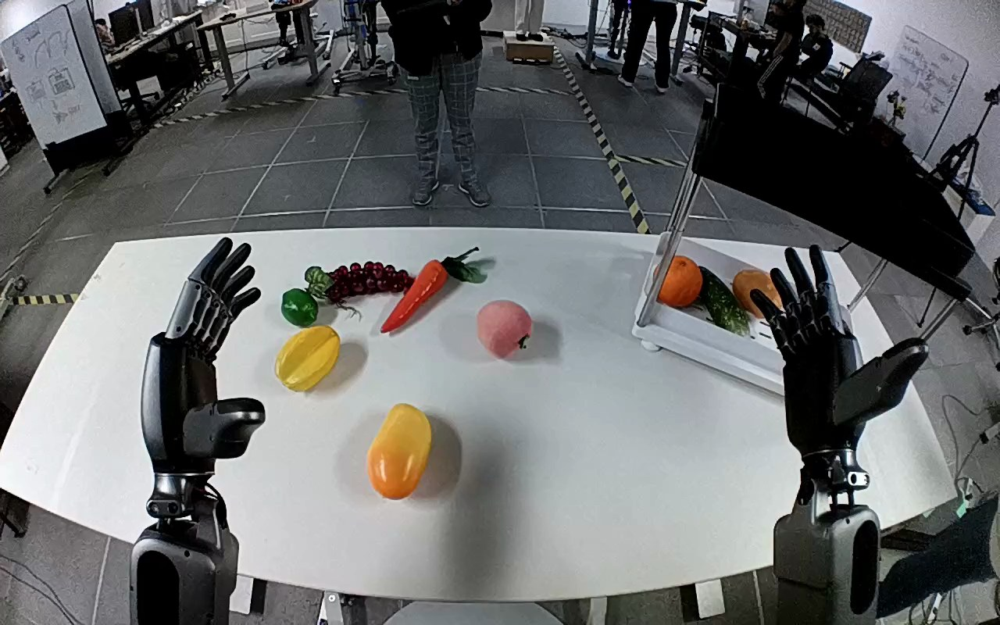

NVIDIA GR1 · 25
Video 25

Visual review action_review.json
{
"prompt_protocol": "humanoid_action_v1",
"prompt_provenance": "visually_authored_from_video_and_initial_frame",
"reviewed_contact_sheets": [
"sheet_001.jpg"
],
"inspected_frame_stride": 2,
"inspected_sampled_frame_count": 60,
"initial_scene": "Egocentric downward view of both forearms and open articulated hands above a white tabletop. A pink peach is near the middle-right of the table; a shelf with a lower white tray containing other fruit is at the robot's right.",
"observed_sequence": [
{
"start_frame": 0,
"end_frame": 24,
"description": "Both hands are open above the table; the pink peach remains on the tabletop.",
"confidence": "high"
},
{
"start_frame": 25,
"end_frame": 58,
"description": "The right hand moves inward from beside the shelf toward the peach, positioning its open thumb and fingers around the object; the left hand remains raised and open.",
"confidence": "high"
},
{
"start_frame": 59,
"end_frame": 76,
"description": "The right hand closes around the peach, securing it between thumb and fingers.",
"confidence": "high"
},
{
"start_frame": 77,
"end_frame": 98,
"description": "The right hand lifts the peach clear of the tabletop and carries it rightward toward the shelf's lower white tray.",
"confidence": "high"
},
{
"start_frame": 99,
"end_frame": 113,
"description": "The right hand lowers the held peach into the lower tray beside the existing fruit.",
"confidence": "high"
},
{
"start_frame": 114,
"end_frame": 119,
"description": "The right fingers open, releasing the peach into the tray. The peach remains inside at the ending; the open hand is still close above it.",
"confidence": "high"
}
],
"arm_hand_roles": {
"right": "Sole manipulating hand: approaches, grasps, lifts and transports the peach, lowers it into the lower tray, and opens to release it.",
"left": "Remains open above the tabletop without contacting the peach or shelf; no supporting or transfer role.",
"coordination": "Single-hand manipulation with no hand-to-hand transfer or human interaction."
},
"anatomical_side_evidence": "The camera looks down from behind the robot's two forearms as they extend forward from the lower edge. The right-side forearm in this egocentric view bears the hand whose thumb points medially toward the other arm when approaching the peach (native frame 40); the opposite hand has the mirrored medial thumb. This paired forearm orientation and thumb anatomy identify the active hand as robot-relative right, consistent with but independently grounded from the instruction. Shoulder attachments are outside the view.",
"terminal_state": "The pink peach is resting inside the lower white shelf tray beside the existing fruit; the right hand has opened beside and above it. The left hand remains raised and open. No subsequent withdrawal is visible.",
"uncertainties": [
"Shoulder attachments are outside this egocentric view; side is established from the paired forward forearms and medial thumb orientation."
],
"annotation_discrepancies": [],
"evidence_frame_indices": [
0,
40,
60,
76,
94,
106,
116,
119
],
"selected_execution_status": "success",
"video_id": "25",
"dataset": "NVIDIA_GR1_100",
"dedicated_review_agent": "review_gr1_25",
"review_source_video": "NVIDIA_GR1_100/25/original/original.mp4",
"source_frame_count": 120,
"source_fps": 20.0,
"native_detail_frames": [
40,
60,
76,
94,
106,
116,
119
],
"world_model_prompt": "The robot uses its right hand to grasp the pink peach near the center of the table, lift it, and carry it to the shelf's lower white tray. It lowers the peach into the tray beside the other fruit and opens its fingers, leaving the peach resting inside. Keep the camera fixed; preserve robot geometry, physically valid joint motion, and normal gripper opening and closing.",
"original_task_instruction": "Use the right hand to pick up pink peach from center of table to lower white tray of plastic shelf.",
"selected_segment": {
"start_frame": 0,
"end_frame_exclusive": 120,
"reason": "Complete original single-task reference; no cropping or trimming requested."
},
"source_video_sha256": "443d004aea0b3322ea354a2614a7b8ab8d86189df175e80442a2d0608dbae9c8",
"review_completed_at": "2026-10-13T17:49:55.927826+00:00"
}